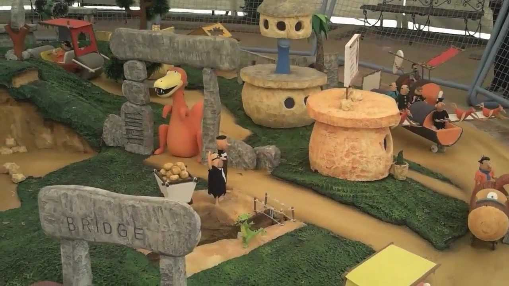

FESTIVAL DE LA RUANA
Es el evento más famoso del municipio. Se celebra a finales del mes de Junio y principios de Julio. Hace diez años el municipio batió un récord al presentar la ruana más grande del mundo, utilizando 1.500 libras de lana

Nobsa se ha caracterizado porque todos los años presenta eventos de gran magnitud que reunen culturas no solo de Colombia, sino también del mundo entero. A continuación se presentan las festividades y eventos que se exponen a toda clase de público:
Es el evento más famoso del municipio. Se celebra a finales del mes de Junio y principios de Julio. Hace diez años el municipio batió un récord al presentar la ruana más grande del mundo, utilizando 1.500 libras de lana
Se celebra en el mes de Octubre. Reúne a todas las personas que les apasiona el vallenato y se caracteriza por presentar rey en las categorías juvenil, provinciano, aficionado y profesional

Celebrado en el Viñedo y Cava de la loma de Puntalarga en el mes de Enero. Presenta variedad de vinos y ofrece cientos de degustaciones para que el partícipe se sienta a gusto durante todo el festival
Se celebran en el mes de Julio. Reúne a las personas que le rinden culto a la virgen del Carmen


Se celebran en el mes de Septiembre, y reúne a los ciudadanos locales y de los alrededores, con el fin de rendir culto San Roque, patrono de Nobsa
Cada Diciembre el municipio expone maravillosas piezas de pesebre elaboradas por sus propios ciudadanos. No sólo presenta el pesebre móvil en el parque principal; también lo hace en el templo parroquial San Jerónimo y en las diferentes veredas

OTROS EVENTOS PRÓXIMOS A REALIZARSE EN EL MUNICIPIO